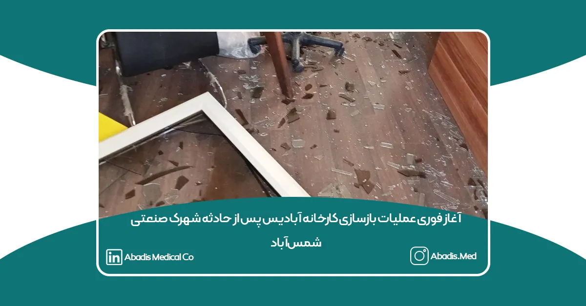
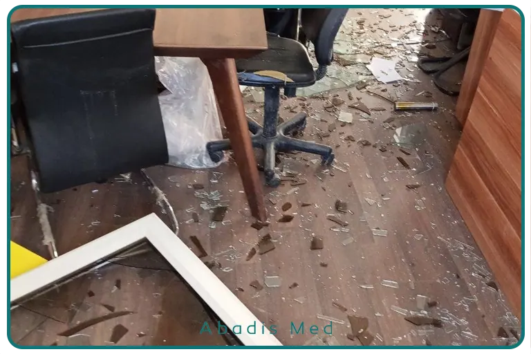
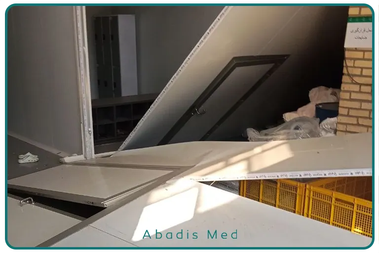
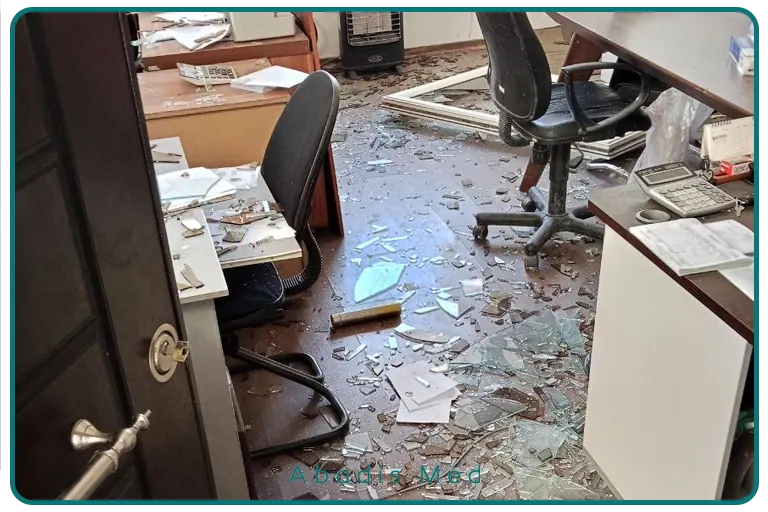

در پی حادثه ناشی از انفجار مخزن تینر در شهرک صنعتی شمسآباد، با وجود تعطیلی کارخانه، تیم مدیریت آبادیس در همان ساعات اولیه در محل حاضر شد و فرآیند ارزیابی دقیق خسارات را آغاز کرد.
پس از برآورد کامل خسارات، برنامه اجرایی بازسازی و احیای خطوط تولید در کوتاهترین زمان تدوین و به تیمهای تخصصی و پیمانکاران ابلاغ شد. همزمان، عملیات جابهجایی و اصلاح خطوط تولید، انتقال بخشهای اداری، تأمین تجهیزات موردنیاز و آمادهسازی فضاهای جایگزین به صورت شبانهروزی آغاز شد.
با بسیج تمامی ظرفیتهای فنی، مهندسی و اجرایی شرکت، روند بازسازی با سرعت بالا دنبال شد تا ضمن حفظ ایمنی، کمترین وقفه در فرآیند تولید ایجاد شود.
این اقدام سریع و هماهنگ، نشاندهنده آمادگی، انسجام و تعهد خانواده بزرگ آبادیس در مدیریت بحران و استمرار خدمترسانی به مراکز درمانی کشور است.


